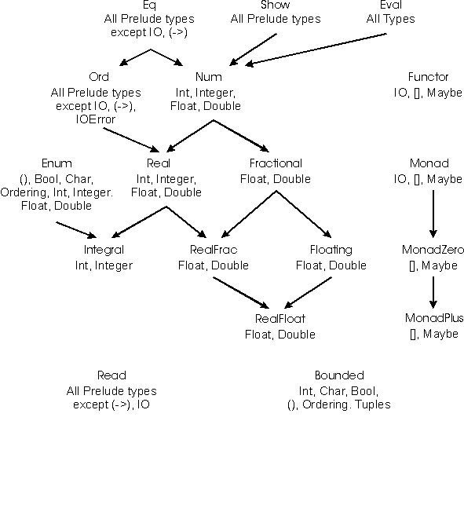

The character type Char is an enumeration and consists of 16 bit values, conforming to the Unicode standard [10]. The lexical syntax for characters is defined in Section 2.5; character literals are nullary constructors in the datatype Char. Type Char is an instance of the classes Read, Show, Eq, Ord, Enum, and Bounded. The toEnum and fromEnum functions, standard functions over bounded enumerations, map characters onto Int values in the range [ 0 , 216-1 ].
Note that ASCII control characters each have several representations in character literals: numeric escapes, ASCII mnemonic escapes, and the \^X notation. In addition, there are the following equivalences: \a and \BEL, \b and \BS, \f and \FF, \r and \CR, \t and \HT, \v and \VT, and \n and \LF.
A string is a list of characters:
type String = [Char]
Strings may be abbreviated using the lexical syntax described in
Section 2.5. For example, "A string" abbreviates
[ 'A',' ','s','t','r', 'i','n','g']
Tuples are algebraic datatypes with special syntax, as defined in Section 3.8. Each tuple type has a single constructor. There is no upper bound on the size of a tuple. However, some Haskell implementations may restrict the size of tuples and limit the instances associated with larger tuples. The Prelude and libraries define tuple functions such as zip for tuples up to a size of 7. All tuples are instances of Eq, Ord, Bounded, Read, and Show. Classes defined in the libraries may also supply instances for tuple types. The constructor for a tuple is written by omitting the expressions surrounding the commas: thus (x,y) and (,) x y produce the same value. The following functions are defined for pairs (2-tuples): fst, snd, curry, and uncurry. Similar functions are not predefined for larger tuples.
IOError is an abstract type representing errors raised by I/O operations. It is an instance of Show and Eq. Values of this type are constructed by the various I/O functions and are not presented in any further detail in this report. The Library Report contains many other I/O functions.

Figure 5Standard Haskell Classes |
For convenience, the Prelude provides the following auxiliary
functions:
reads :: (Read a) => ReadS a
reads = readsPrec 0
shows :: (Show a) => a -> ShowS
shows = showsPrec 0
read :: (Read a) => String -> a
read s = case [x | (x,t) <- reads s, ("","") <- lex t] of
[x] -> x
[] -> error "PreludeText.read: no parse"
_ -> error "PreludeText.read: ambiguous parse"
show :: (Show a) => a -> String
show x = shows x ""
shows and reads use a default precedence of 0. The show
function returns a String instead of a ShowS; the read function reads
input from a string, which must be completely consumed by the input
process. The lex function used by read is also part of the Prelude.
The Functor class is used for types that can be mapped over. Lists, IO, and Maybe are in this class. The IO type, Maybe, and lists are instances of Monad. The do syntax provides a more readable notation for the operators in Monad. Both lists and Maybe are instances of the MonadZero class. The MonadPlus class provides a `monadic addition' operator: ++. In the Prelude, Maybe and lists are in this class. For lists, ++ defines concatenation. For Maybe, the ++ function returns the first non-empty value (if any).
Instances of these classes should satisfy the following laws:
| map id | = | id |
| map (f . g) | = | map f . map g |
| map f xs | = | xs >>= return . f |
| return a >>= k | = | k a |
| m >>= return | = | m |
| m >>= (\x -> k x >>= h) | = | (m >>= k) >>= h |
| m >> zero | = | zero |
| zero >>= m | = | zero |
| m ++ zero | = | m |
| zero ++ m | = | m |
All instances defined in the Prelude satisfy these laws.
The Prelude provides the following auxiliary
functions:
accumulate :: Monad m => [m a] -> m [a]
sequence :: Monad m => [m a] -> m ()
mapM :: Monad m => (a -> m b) -> [a] -> m [b]
mapM_ :: Monad m => (a -> m b) -> [a] -> m ()
guard :: MonadZero m => Bool -> m ()
The Bounded class is used to name the upper and lower limits of a type. Ord is not a superclass of Bounded since types that are not totally ordered may also have upper and lower bounds. The types Int, Char, Bool, (), Ordering, and all tuples are instances of Bounded. The Bounded class may be derived for any enumeration type; minBound is the first constructor listed in the data declaration and maxBound is the last. Bounded may also be derived for single-constructor datatypes whose constituent types are in Bounded.
The functions seq and strict are defined by the equations:
| seq _|_b = _|_ |
| seq a b = b, if a /=_|_ |
| strict f x = seq x (f x) |
These functions are usually introduced to improve performance by avoiding unneeded laziness. Strict datatypes (see Section 4.2.1) are defined in terms of the strict function. This class explicitly marks functions and types that employ polymorphic strictness.
The Eval instance for a type T with a constructor C implicitly
derived by the compiler is:
instance Eval T where
x `seq` y = case x of
C -> y
_ -> y -- catches any other constructors in T
The case is used to force evaluation of the first argument to `seq`
before returning the second argument. The constructor mentioned
by seq is arbitrary: any constructor from T can be
used.
Haskell provides several kinds of numbers; the numeric types and the operations upon them have been heavily influenced by Common Lisp and Scheme. Numeric function names and operators are usually overloaded, using several type classes with an inclusion relation shown in Figure 5. The class Num of numeric types is a subclass of Eq, since all numbers may be compared for equality; its subclass Real is also a subclass of Ord, since the other comparison operations apply to all but complex numbers (defined in the Complex library). The class Integral contains both fixed- and arbitrary-precision integers; the class Fractional contains all non-integral types; and the class Floating contains all floating-point types, both real and complex.
The Prelude defines only the most basic numeric types: fixed sized integers (Int), arbitrary precision integers (Integer), single precision floating (Float), and double precision floating (Double). Other numeric types such as rationals and complex numbers are defined in libraries. In particular, the type Rational is a ratio of two Integer values, as defined in the Rational library.
The default floating point operations defined by the Haskell Prelude do not conform to current language independent arithmetic (LIA) standards. These standards require considerable more complexity in the numeric structure and have thus been relegated to a library. Some, but not all, aspects of the IEEE standard floating point standard have been accounted for in class RealFloat.
Table 3 lists the standard numeric types. The type Int covers at least the range [ - 229, 229 - 1]. As Int is an instance of the Bounded class, maxBound and minBound can be used to determine the exact Int range defined by an implementation. Float is implementation-defined; it is desirable that this type be at least equal in range and precision to the IEEE single-precision type. Similarly, Double should cover IEEE double-precision. The results of exceptional conditions (such as overflow or underflow) on the fixed-precision numeric types are undefined; an implementation may choose error (_|_, semantically), a truncated value, or a special value such as infinity, indefinite, etc.
| Type | Class | Description |
| Integer | Integral | Arbitrary-precision integers |
| Int | Integral | Fixed-precision integers |
| (Integral a) => Ratio a | RealFrac | Rational numbers |
| Float | RealFloat | Real floating-point, single precision |
| Double | RealFloat | Real floating-point, double precision |
| (RealFloat a) => Complex a | Floating | Complex floating-point |
The standard numeric classes and other numeric functions defined in the Prelude are shown in Figures 6--7. Figure 5 shows the class dependencies and built-in types that are instances of the numeric classes.
Figure 7Standard Numeric Classes and Related Operations, Part 2 |
The syntax of numeric literals is given in
Section 2.4. An integer literal represents the
application
of the function fromInteger to the appropriate
value of type
Integer. Similarly, a floating literal stands for an application of
fromRational to a value of type Rational (that is,
Ratio Integer). Given the typings:
fromInteger :: (Num a) => Integer -> a
fromRational :: (Fractional a) => Rational -> a
integer and floating literals have the
typings (Num a) => a and (Fractional a) => a, respectively.
Numeric literals are defined in this indirect way so that they may be
interpreted as values of any appropriate numeric type.
See Section 4.3.4 for a discussion of overloading ambiguity.
The infix class methods (+), (*), (-), and the unary function negate (which can also be written as a prefix minus sign; see section 3.4) apply to all numbers. The class methods quot, rem, div, and mod apply only to integral numbers, while the class method (/) applies only to fractional ones. The quot, rem, div, and mod class methods satisfy these laws:
| (x `quot` y)*y + (x `rem` y) == x |
| (x `div` y)*y + (x `mod` y) == x |
`quot` is integer division truncated toward zero,
while the result of `div` is truncated toward
negative infinity.
The quotRem class method takes a dividend and a divisor as arguments
and returns a (quotient, remainder) pair; divMod is defined
similarly:
quotRem x y = (x `quot` y, x `rem` y)
divMod x y = (x `div` y, x `mod` y)
Also available on integral numbers are the even and odd predicates:
even x = x `rem` 2 == 0
odd = not . even
Finally, there are the greatest common divisor and least common
multiple functions: gcd x y is the greatest
integer that divides both x and y. lcm x y
is the smallest positive integer that both x and y divide.
The one-argument exponential function exp and the logarithm function log act on floating-point numbers and use base e. logBase a x returns the logarithm of x in base a. sqrt returns the principal square root of a floating-point number. There are three two-argument exponentiation operations: (^) raises any number to a nonnegative integer power, (^^) raises a fractional number to any integer power, and (**) takes two floating-point arguments. The value of x^0 or x^^0 is 1 for any x, including zero; 0**y is undefined.
A number has a magnitude
and a sign. The functions abs and
signum apply to any number and satisfy the law:
abs x * signum x == x
For real numbers, these functions are defined by:
abs x | x >= 0 = x
| x < 0 = -x
signum x | x > 0 = 1
| x == 0 = 0
| x < 0 = -1
The circular and hyperbolic sine, cosine, and tangent functions and their inverses are provided for floating-point numbers. A version of arctangent taking two real floating-point arguments is also provided: For real floating x and y, atan2 y x differs from atan (y/x) in that its range is ( -p, p] rather than (- p/ 2 , p/ 2 ) (because the signs of the arguments provide quadrant information), and that it is defined when x is zero.
The precise definition of the above functions is as in Common Lisp, which in turn follows Penfield's proposal for APL [7]. See these references for discussions of branch cuts, discontinuities, and implementation.
The ceiling, floor, truncate, and round functions each take a real fractional argument and return an integral result. ceiling x returns the least integer not less than x, and floor x, the greatest integer not greater than x. truncate x yields the integer nearest x between 0 and x, inclusive. round x returns the nearest integer to x, the even integer if x is equidistant between two integers.
The function properFraction takes a real fractional number x and returns a pair comprising x as a proper fraction: an integral number with the same sign as x and a fraction with the same type and sign as x and with absolute value less than 1. The ceiling, floor, truncate, and round functions can be defined in terms of this one.
Two functions convert numbers to type Rational: toRational returns the rational equivalent of its real argument with full precision; approxRational takes two real fractional arguments x and e and returns the simplest rational number within e of x, where a rational p/q in reduced form is simpler than another p' / q' if |p| <=|p'| and q <=q' . Every real interval contains a unique simplest rational; in particular, note that 0/1 is the simplest rational of all.
The class methods of class RealFloat allow efficient, machine-independent access to the components of a floating-point number. The functions floatRadix, floatDigits, and floatRange give the parameters of a floating-point type: the radix of the representation, the number of digits of this radix in the significand, and the lowest and highest values the exponent may assume, respectively. The function decodeFloat applied to a real floating-point number returns the significand expressed as an Integer and an appropriately scaled exponent (an Int). If decodeFloat x yields (m,n), then x is equal in value to mbn, where b is the floating-point radix, and furthermore, either m and n are both zero or else bd-1<=m<bd, where d is the value of floatDigits x. encodeFloat performs the inverse of this transformation. The functions significand and exponent together provide the same information as decodeFloat, but rather than an Integer, significand x yields a value of the same type as x, scaled to lie in the open interval (-1,1). exponent 0 is zero. scaleFloat multiplies a floating-point number by an integer power of the radix.
The functions isNaN, isInfinite, isDenormalized, isNegativeZero, and isIEEE all support numbers represented using the IEEE standard. For non-IEEE floating point numbers, these may all return false.
Also available are the following coercion functions:
fromIntegral :: (Integral a, Num b) => a -> b
fromRealFrac :: (RealFrac a, Fractional b) => a -> b